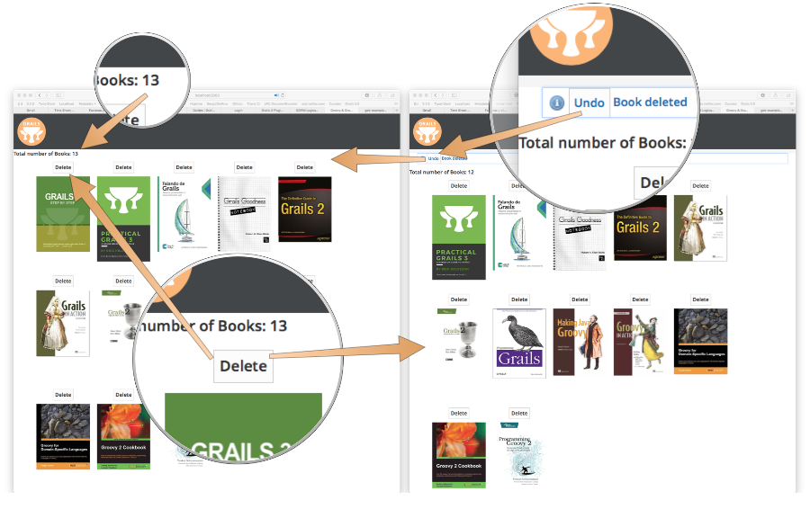

GORM Logical delete
Learn how to use GORM Logical delete plugin
Authors: Sergio del Amo
Grails Version: 3
1 Training
2 Getting Started
In this guide, we will introduce you GORM Logical Delete plugin.
2.1 What you will need
2.2 How to complete the guide
3 Application Overview
Logical Deletion:
Reference to a record that remains in the database, but is not included in comparisons or retrieved in searches.
In this guide, we use the GORM Logical Delete plugin to create Logical deletion into a Grails application.
We will create a delete button and undo functionality in a book collection.

We have already added the necessary assets (book cover images) to the initial/grails-app/assets/images folder for you.
|
3.1 Install Plugin
Add plugin dependency to build.gradle.
link:../snippets/build.gradle[role=include]3.2 Domain
Add a Book domain class:
link:../snippets/grails-app/domain/demo/Book.groovy[role=include]| 1 | Implement gorm.logical.delete.LogicalDelete trait, which can applied to any domain class to indicate that the domain class should participate in logical deletes. The trait adds a boolean persistent property named deleted to the domain class. When this property has a value of true, it indicates that the record has been logically deleted and as such will be excluded from query results by default. |
3.3 Controller
Create a controller which in collaboration with a service retrieves a list of books, a book’s detail and provide actions to delete and undo a book deletion.
link:../snippets/grails-app/controllers/demo/BookController.groovy[role=include]3.4 Services
Create a POGO BookImage in the src/main/groovy directory
link:../snippets/src/main/groovy/demo/BookImage.groovy[role=include]Create default CRUD actions for Book leveraging GORM data services.
link:../snippets/grails-app/services/demo/BookDataService.groovy[role=include]| 1 | Delete a domain class as you normally would. The book’s deleted property is set to true, but book stays in the persistence storage. |
| 2 | This Where Query does not retrieve books which have been logically deleted. |
| 3 | For cases where you would like logically deleted records to be included in query results, queries may be wrapped in a call to withDeleted. |
| 4 | In order to reverse the deleted field use unDelete(). |
3.5 Views
Create a GSP view to list books. For each book, we add a delete button. If undoId is present,
we present an Undo button.
link:../snippets/grails-app/views/book/index.gsp[role=include]3.6 BootStrap
Create sample data in Bootstrap.groovy when we run the app in the development environment.
link:../snippets/grails-app/init/demo/BootStrap.groovy[role=include]3.7 URLMappings
Update our UrlMappings.groovy so that the default url displays the books grid.
link:../snippets/grails-app/controllers/demo/UrlMappings.groovy[role=include]| 1 | Updated default URL |
3.8 Integration Test
Create a Geb functional test which verifies the undo button works:
link:../snippets/src/integration-test/groovy/demo/BooksUndoSpec.groovy[role=include]The previous test uses a Geb Page and Module to encapsulate implementation details and focus in behaviour being verified.
link:../snippets/src/integration-test/groovy/demo/BookModule.groovy[role=include]link:../snippets/src/integration-test/groovy/demo/BooksPage.groovy[role=include]4 Conclusion
The goal of this guide is to show you the potential of the logical delete plugin, not a perfect implementation of undo functionality. For example, in this app we should protect the undoDelete action to be randomly invoked.
|
To learn more, read more Introducing the Grails 3 GORM Logical Delete plugin's blog post and read the plugin docs.